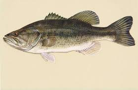
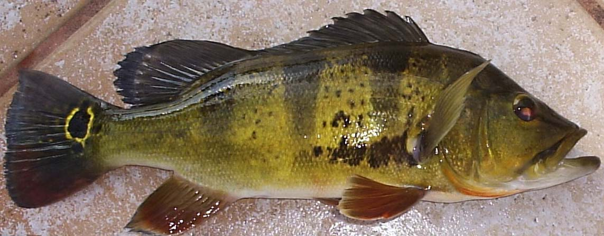

<!DOCTYPE html>
<html>
        <link rel="stylesheet" href="../CSS/Fishing.css">
</html>
<head>
    <body>
            <a href="Fishing.html">Home page</a>
            <a href="fishing 2.html" target="_blank"> Page 2 Sea Bass</a>
             <a href="Fishing 4.html" target="_blank"> Page 4 ambloplites family</a>
          <h1>Sunfish family/ Black Basses</h1>
           <p>Pan fish family/ black bass</p>
<div class="p2"><p> The largemouth bass are the biggest in the sunfish family. The largemouth bass typically live 10 and 16 years the females grow faster and are larger than the males. The largemouth bass eaching lengths over 20 inches and weights often exceeding 10 and 12 lbs.   </p></div> 
            
            <div class="p2"><p>Smallmouth bass is a highly prized. The Smallmouth bass is a hard fighting freshwater fish that is a bronze color and is football shaped. They live in cool, clear, rocky lakes and rivers. Smallmouth bass love to eat crayfish, minnows, insects, and smaller fish.</p></div>
              
              <div class="p2"><p>The butterfly peacock bass is native to the amazon basin. The butterfly peacock bass was introduced to south florda in 1984 It was for to control invasive fish. They grow 2-8 lbs. they are riking golden yellow body, three black bars, and a prominent black, gold-edged eye spot ocellus on the tail.</p></div>
               
               


        
    </body>
</head>
